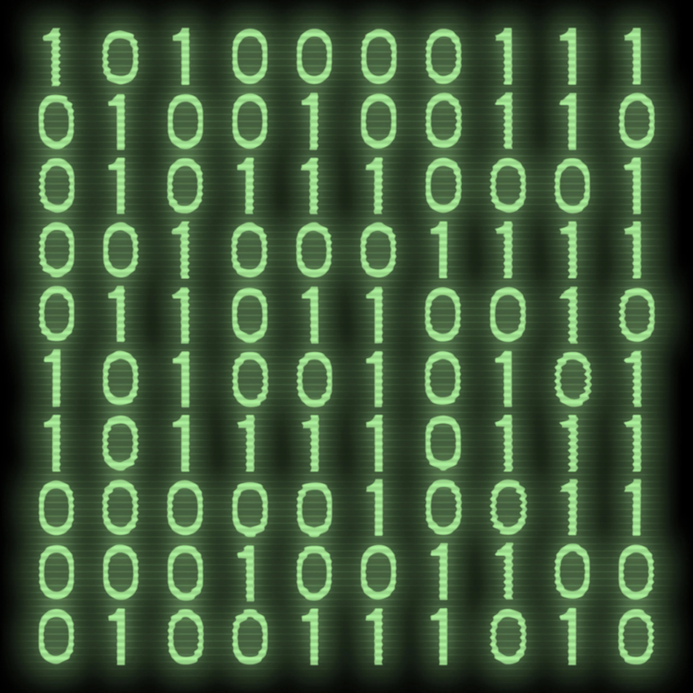

Computers werken met het binaire stelsel.Het binair stelsel gebruikt alleen de cijfers 0 en 1.
Zo een 0 of een 1 word een bit genoemd. 8 Van die bits samen, noem je een byte
Computers gebruiken dit om informatie te verwerken. Een 0 staat voor uit en een 1 staat voor aan.
Wil je oefenen met het binaire stelsel? Klik dan op de onderstaande afbeelding.
